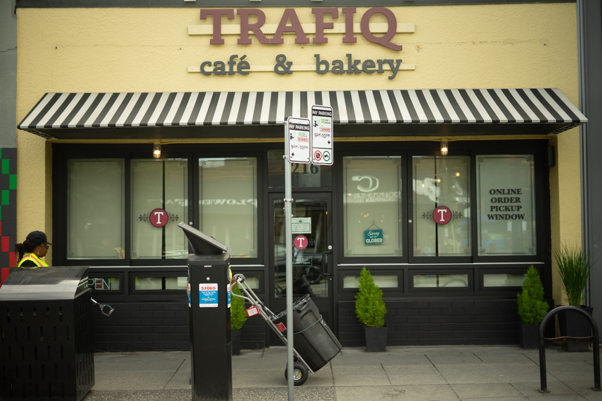
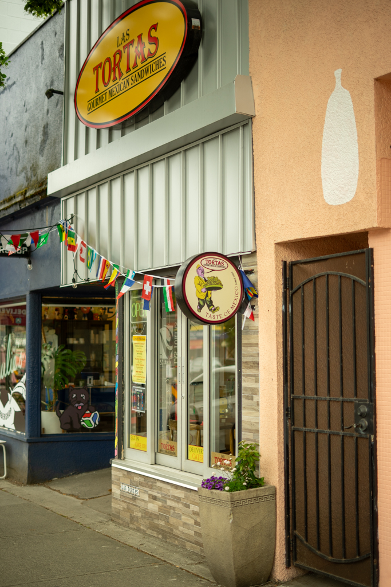

Kids afternoon on Main
Tap a stop to read more — open the guide to customize this route.
I love taking my kid into the city. We always find so much to do, try new foods, discover new parks, and of course, hit up some toy shops. If you are wanting to come into Mount Pleasant for a few hours, eat and drink, but also have some spots for your kids to engage and burn some energy as well, this one is for you. Unfortunately, Main Street-Science World is a bit of a hike up to get to the spots I'm suggesting, so for this one, you'll want to try and find parking off Main somewhere. I'd start further South, as our first stop will be Coco Et Olive, where you can grab a snack for the kiddo and a coffee for yourself and head over to the picnic benches next door to safely enjoy.

Once you're ready to shop a bit, you can walk a few meters over to Collage Collage, where there are tonnes of great books, toys, art supplies, and activities for kids.

You can then head a bit further up the street to check out Front & Company Gift shop, with tonnes of fun things for the kids to check out, stickers, small toys and gifts, and stuffies galore.
If you want one more shopping stop before hitting a park, you can be brave and head over to Granville Island Toy Company, but be warned, you might get stuck in there for a bit.
If you're needing lunch before the park, you can meander back over to Liberty, Traffic, or Las Tortas, where you can find lots of different sandwiches and lunch options.
Either works — pick one in the guide

5. Liberty Bakery + Café

6. Trafiq Cafe & Bakery

7. Las Tortas Mexican Gourmet Sandwiches
Then, if it's a warm summer day and you're still looking to burn some energy, you could end the trip with a visit to Prince Edward Park, where they have a playground and splash pad. If you're looking to stay dry, Riley Park is a good option as well.